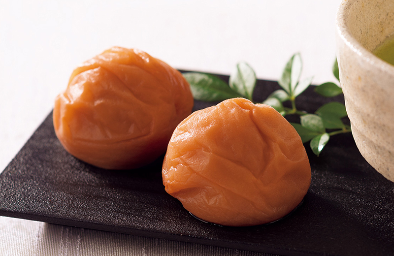
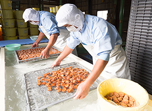
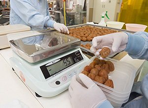
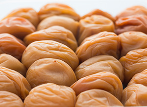
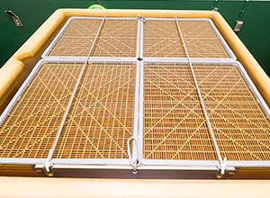
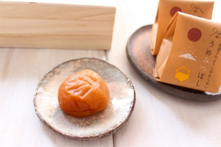
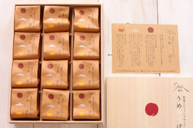
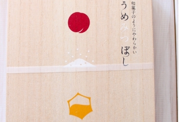
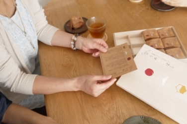

紀州南高梅 国産はちみつ梅干
うめみつぼし
塩分わずか3%！
和菓子のようにいただける梅干し
ここが「極み」
- 梅の高級ブランド、和歌山県産「紀州南高梅」を使用。
- 国産はちみつを使い、塩分を約3％まで抑えました。
疲労回復や血液の浄化、解毒や免疫力の向上などの働きを持つクエン酸が豊富で、古くは漢方薬、現在は健康食品として知られる梅干。
その酸味をまろやかにし、より多くの方に愛されるよう20年ほど前から流通するようになったのがはちみつ梅干ですが、従来品はやはり製造方法上、多くの塩分を含んでいます。
そこで「もっと塩分を抑えて梅本来の味を残しながら、健康志向に応えられる新しいはちみつ梅干がつくれないだろうか？」そんなリンベルの思いから、梅干の名産地、紀州・和歌山県のこだわりの梅干メーカーとのコラボによって生まれたのが、塩分わずか3％という、この「うめみつぼし」です。
柔らかい果肉に梅そのものの味わいと、はちみつの甘みを含んだ大ぶりな梅を、ひとつひとつ丁寧に包んでお届けする、梅干という枠を越えた上質な和菓子の品格さえ感じる逸品です。

徹底的な減塩を行うことで梅本来の味を生かす
梅本来の味を生かす
「かつては酸っぱい・塩っぱいが定番だった梅干ですが、一般的な梅干しは苦手でも、ほんのり甘みのある梅干しなら食べられるという方が増えています。消費者の嗜好の変化にともない、酸っぱさより甘みの目立つ梅干がポピュラーになってきました。
こうした変化を象徴しているのが、20年ほど前に誕生した、はちみつ梅干です。柔らく甘みのある果肉の味わいは年齢性別を問わず多くの人に好まれ、今や梅干の定番人気商品となっています。
とはいえ、やはり一般の食品に比べ塩分量は多く、はちみつ梅干しも登場した頃は塩分8～10％が一般的でした。その後、健康志向の需要に合わせて減塩商品が増え、現在は5～6％のものが主流となっています。
血圧や腎臓への負担など健康を考え、塩分摂取量を抑えたいというご要望はめずらしくありません。しかし、そもそも塩分は梅干づくりに不可欠な成分であり、単に塩分を抑えるだけでは、おいしい梅干にはならないのです。
そんな、「減塩とおいしさの両立」という大きな課題にリンベルが取組み、和歌山県のこだわりの梅干メーカーとのコラボレーションによって生まれたのが、この「うめみつぼし」なのです。
塩分わずか3％という圧倒的な減塩を図りながらも、厳選された大ぶりの果肉に梅らしい風味をしっかり残しつつ、国産の百花蜜（はちみつ）を配合。上質な甘みと塩気、そして酸味を湛えた艶のある見栄えと味わいは、上質な個包装とあいまって梅干というより、まるで完成された和菓子のようです。
お食事のお供に、酒肴に、そしてお茶うけに、ぜひこの上品な味わいをご賞味ください。


素材となる梅選びへのこだわり
国内生産量の約60％といわれる、梅生産量日本一の和歌山県が誇る梅のトップブランド「南高梅」。実は大ぶりでありながら種子は比較的小さく、果肉が厚くて柔らかいのが特徴です。
「うめみつぼし」に使われる素材は、こだわりの梅干メーカーの社長以下、梅の目利きのベテランの社員が、その南高梅の中でも品質に徹底的にこだわって選んだ梅だけ。自分たちで毎年一軒一軒、梅農家さんを訪ねて梅林の状態を確認しながら、今年はこの地域の、この方がつくった梅を使いたいと、個別に農家さんと交渉しています。信頼のおける「顔の見える農家」がつくった、納得できる梅だけを厳選して使用しているのです。
「やっぱりいいものつくろうとしたら原料から。手間はかかるけど、選定にはこだわりをもってがんばっています」と、メーカー社長は語ります。

無駄な味を一切加えないことへのこだわり
一般的に梅干づくりには調味料やアミノ酸が使用されますが、「うめみつぼし」では、酸味を残しながら、旨味成分と南高梅そのものの風味や味わいを残すことにこだわり、余分な味わいを一切加えません。
使用するのは厳選した南高梅、ミネラル豊富な天日塩、なめらかな口当たりの国産の百花蜜（はちみつ）、醸造酢、そして甘みを整える水飴など必要最低限の甘味料だけ。 ナチュラルでシンプルな味わいのハーモニーはバランスが決め手。中でも梅干としての味わいの決め手となる、上質な梅酢（クエン酸）の酸味を残す配合こそ、「うめみつぼし」が「日本の極み」たる秘密だそうです。

熟練の職人による２度漬けへのこだわり
梅干づくりは、6～7月にかけて収穫した完熟梅を洗浄、選果して、塩漬けにしていくことからはじまります。その後お盆明けの頃に、三日三晩ビニールハウスでの天日干しを経て、梅のサイズや状態によって等級分けが行われます。「うめみつぼし」では、その中での最上ランクのAクラスの梅のみが使われています。
さらに洗浄、水に漬け置く脱塩の工程を経て、こだわりのはちみつを使った調味液に漬け込みます。味付けを行いながら梅から脱塩がさらに進み、塩気が抜けていくのがこの段階です。漬け込みの工程では梅がつぶれて型崩れするおそれがあるため、多くの梅干では、漬け込みは1度しか行われませんが、「うめみつぼし」はさらなる低減と安定した味づくりにこだわり、あえて歩留まりを気にせず2度漬けを行っているのも大きな特徴です。漬け込みの時間は、梅の状況や仕上がり具合を確かめながら、20年以上のキャリアを持つベテランの調味担当が目と舌で判断していきます。
生菓子をつくるような鮮度へのこだわり
梅干といえば保存食のイメージがありますが、塩分をわずか3%に抑えた「うめみつぼし」は、空気に触れることでの酸化・醗酵が一般の梅干より早いため、漬けあがった梅は生鮮食品のように、できるだけ空気に触れないよう、手早くひとつひとつ丁寧に個包装を行い冷蔵庫で出荷を待ちます。
味わいも和菓子のようにデリケートな、この「うめみつぼし」はお手元に届いたらなるたけ早いうちのお召し上がりが一番ですが、冷蔵庫など温度が一定の冷暗所で保管いただくことで約180日間、その味わいを保つことができます。
レビュー
開封から味わいまで、
美食の専門家が徹底レビュー！
さすがリンベルさんが「日本の極み」と認めた商品だと、納得するところでありました。
料理研究家稲垣飛鳥 さん
-
とっても素敵な木箱に素敵なイラスト。あげた方ももらった方も嬉しくなるねーとみんな大絶賛！！！

-
なんとかわいい個包装。もしかしたら、今までで一番感動したパッケージかもです。

-
見ただけで、やさしい味が想像できます。あの酸っぱい梅干のイメージとは全く違いますね。

-
塩分が３％と低くてヘルシーでお茶請けにもいい。なんだか、焼酎にも合いそうな気がするわー！
